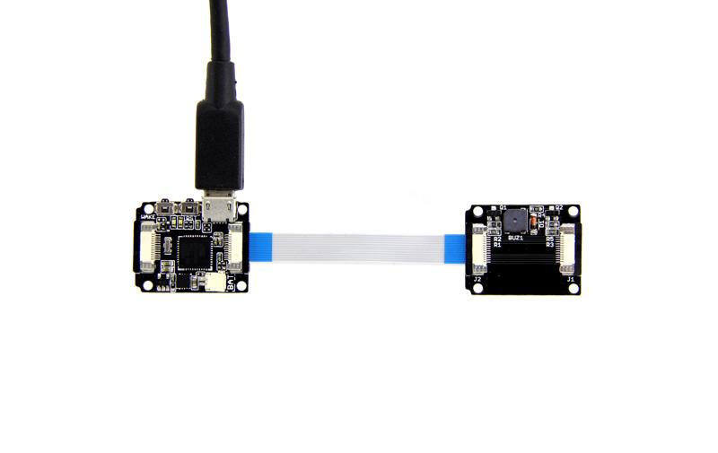

This is a Xadow module which can emit a tone. To drive it, you need to give control to two pins simultaneously: this is different from Grove - Buzzer which uses one pin to control. It is petite but loud! It can be used for making beeps, tones and alerts.
Xadow is a small but perfectly formed Arduino(TM) compatible board series containing several modules. It's a kit extremely suitable for space-sensitive projects such as wearable devices & arts designs, which have higher request on size, weight and flexible cascade connection.
You can find more modules here.
There is an easy demo to show how to drive buzzer sound. If you have successfully used it, then you can apply it to your great projects, such as detecting the battery status: the buzzer will emit a sound when Xadow Main Board is in low battery.

void setup()
{
DDRB |= 0x06;
}
void loop()
{
//turn on the buzzer
PORTB |= 0x06;
delay(1);
//turn off the buzzer
PORTB &= ~(0x06);
delay(1);
}